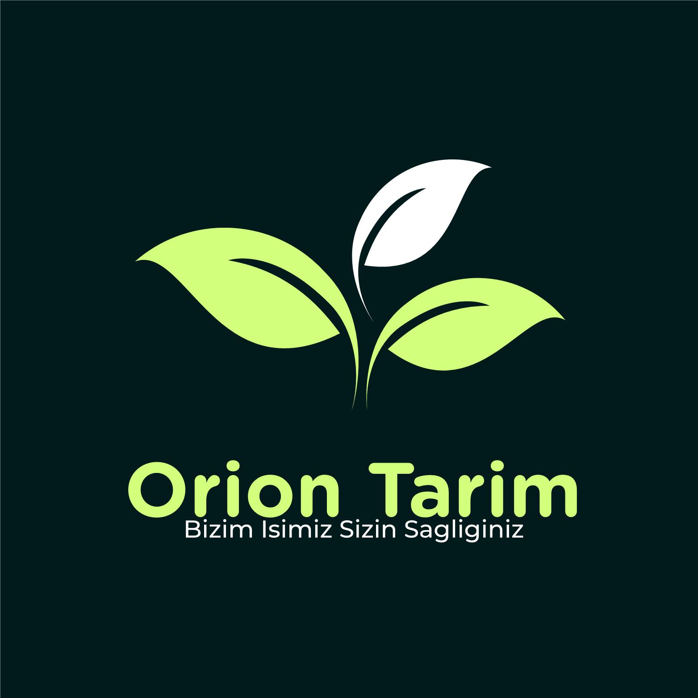

ORİON TARIM BİZİM İŞİMİZ SİZİN SAĞLIĞINIZ
Anasayfa
Ürünlerimiz
Neden Biz?
Vizyonumuz Ve Misyonumuz
Bayilerimiz
Bayilik Başvuru
Bize Ulaşın
Galeri
Kereviz Yemek Tarifi
Dolma Yemek Tarifi
Zeytin Yağlı Salata Tarifi
Sponsorlar
Malzemeler
1 kase çekirdeksiz yeşil zeytin
1 domates
1 kuru soğan
1 çay bardağı zeytinyağı
2 yemek kaşığı nar ekşisi
1 çay kaşığı kuru nane
1 tutam maydanoz
pulbiber
2 tane taze yeşil biber
Tarif
Domates, biber, kuru soğan ve maydanozu küçük küçük doğrayıp çekirdeksiz yeşil zeytinin üzerine bırakınız baharatlarınıda katıp yağını da ekleyiniz.
Az tuz atıp karıştırıp servis tabağına alınız. Afiyet olsun.